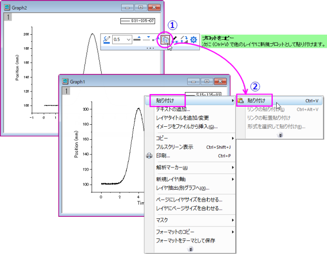
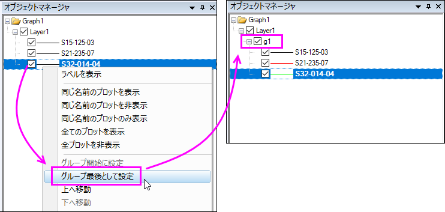

既存グラフにデータプロットを追加する
Adding-Plot
概要
データセットをグラフレイヤーにプロットした後で、もう1つのデータセットを同じグラフレイヤーにプロットしたい場合があります。
この場合、4つの方法が考えられます。
- データセットをグラフレイヤにドラッグアンドドロップする
- データをグラフにドラッグアンドドロップして追加できます。この方法の場合、作図には、ワークシート列のXY属性が適用されます。
- 「作図のセットアップ」ダイアログを使ってプロットを追加する
- 作図のセットアップ ダイアログを使って、既存のグラフにデータプロットを追加、並び替え、再配置することができます。このダイアログは、目的のデータシートの選択したり、ロングネームのような列のメタデータを使ってプロットするデータを選択するという柔軟性があります。
- 「レイヤ内容」ダイアログを使ってレイヤにデータを追加します。
- レイヤ内容ダイアログは、グラフレイヤにデータプロットの追加と削除、グループ化と非グループ化、データプロットの順序変更(描画順序入れ替え)を行う際に使います。
- ミニツールバーの「グラフ作図のためにコピー」ボタンを使って、グラフレイヤに既存のプロットを追加する。
- Origin2020から、ミニツールバーの「グラフ作図のためにコピー」ボタンを使って、グラフからプロットをコピーして別のレイヤに貼り付けることが出来ます。この方法では、既存のプロットを既存の他のグラフレイヤに追加することが出来ます。
学習する項目
このチュートリアルでは、以下の項目について解説します。
- ドラッグアンドドロップを使って、レイヤにデータを追加する
- 「作図のセットアップ」ダイアログを使って、レイヤにデータを追加する
- 「レイヤ内容」ダイアログを使って、レイヤにデータを追加します
- ミニツールバーを使って、プロットをコピーしレイヤに貼り付ける
- オブジェクトマネージャでプロットをグループ化する
- 「データプロットの凡例を更新」ダイアログを使って、グラフの凡例を更新します
ステップ
データ入力と作図
- 標準ツールバーの新規プロジェクトボタンをクリックして、新しいプロジェクトを開きます。
- 標準ツールバーのインポートウィザードボタン をクリックします。インポートウィザードが開きます。(初めてインポートウィザードを開く場合、Originは必要なファイルをコンパイルするので少し時間がかかります。)
- データタイプグループで、ASCII ラジオボタンが選択されていることを確認します。
- 『ファイル』テキストボックスの右側にある参照 ボタンをクリックします。 Originフォルダに移動し、Samples フォルダ内にあるImport and Exportフォルダに移動します。
- CTRLキーを押して、ファイル S15-125-03.dat、S21-235-07.dat、S32-014-04.dat を選択し、ファイルの追加をクリックします。
- OKをクリックします。
- 「現在のタイプのインポートフィルタ」を「データフォルダ：VarsFromFileNameAndheader」のままにします。 (このフィルタにはファイルをインポートする時に使用される設定があります。)
- インポートモードをシートを新たに作って読み込むに設定します。
- 完了ボタンをクリックします。3つのデータファイルがそれぞれ新しいシートとしてワークブックにインポートされます。Trial Run 1、Trial Run 2、Trial Run 3の3つのシートを持つブックができます。
- Trial Run 1 シートを選択し、D(Y) 列を選択します。2Dグラフギャラリーツールバーの折れ線ボタンをクリックします。Graph1という新しいグラフが作成されます。
プロットの追加
ドラッグアンドドロップの使用
- Graph1のタイトルバーで右クリックし、コンテキストメニューから、ウィンドウの複製作成を選択し、グラフを複製します。
- 新しいグラフウィンドウをアクティブにして、ソースのワークシートと重ならないようにOriginワークスペース内の灰色のスペースに移動させます。
- ソースのワークシートの2枚目のシート「Trial Run 2」をクリックして選択し、列Dのヘッダをクリックして選択します。ドラッグアンドドロップアイコン
 が表示されるように、カーソルを列Dの右側の境界に移動します。
が表示されるように、カーソルを列Dの右側の境界に移動します。
- グラフウィンドウまでそのままカーソルを移動し、ドラッグアンドドロップします。
- グラフに新しいプロットが追加されます。
- ソースのワークシートの3枚目のシート「Trial Run 3」をクリックして選択します。列Dを選択してグラフウィンドウにドラッグアンドドロップし、グラフレイヤに新しいプロットを追加します。
- レイヤに3つのプロットを持つグラフが完成しました。
| 他の方法
ステップ3・4のときに、ミニツールバーのグラフ作図のためにコピーボタンを使ってプロットを追加することも出来ます。次のような手順となります。
- ソースのワークシートの2枚目のシート「Trial Run 2」をクリックして選択し、列Dのヘッダをクリックして選択します。表示されたミニツールバーのグラフ作図のためにコピーボタン
 をクリックします。 をクリックします。
- グラフウィンドウをアクティブにします。レイヤ内の何もない部分で右クリックして、コンテキストメニューから貼り付け：貼り付けを選択します。
|
作図のセットアップの使用
- Graph1のタイトルバーで右クリックし、コンテキストメニューから、ウィンドウの複製作成を選択し、グラフを複製します。
- グラフをアクティブにして、グラフの左上のレイヤ「１」アイコンを右クリックして、作図のセットアップを選択します。
 | 作図のセットアップダイアログには、3つのパネルがあります。 ボタンをクリックしてグラフタイプパネルを展開し、次に再度ボタンをクリックして利用可能なデータパネルを展開します。 ボタンをクリックしてグラフタイプパネルを展開し、次に再度ボタンをクリックして利用可能なデータパネルを展開します。
詳細な情報は作図のセットアップで作図を参照してください。
|
- 下パネルのプロットリストでLayer 1を選択します。Ctrlキーを押して、利用可能なデータリスト（3つのパネルの一番上）からTrial Run 2とTrial Run 3を同時に選択します。中央のパネルで、TimeをX、PositionをYにします。追加ボタンをクリックして、これら2つのデータをグラフレイヤに追加します。
レイヤの内容の使用
- Graph1のタイトルバーで右クリックし、コンテキストメニューから、ウィンドウの複製作成を選択し、グラフを複製します。
- レイヤ1アイコンをダブルクリックしてレイヤ内容ダイアログボックスを開きます。
| 他の方法
メニューから挿入：レイヤにプロットから作図形式を選択し、レイヤ内容ダイアログを開くことが出来ます。
|
- ダイアログの左パネルで Trail Run 2 と Trail Run 3 の列Dを選択し、
 ボタンをクリックしてレイヤ1にこれら2列を追加します。
ボタンをクリックしてレイヤ1にこれら2列を追加します。
- 右側のパネルで2つの新しいプロットが選択されているので、非グループ化ボタンをクリックして、最初にそれらのグループを解除します。これら3つすべてのプロットを後でグループ化します。
- OKボタンをクリックして、ダイアログを閉じます。
ミニツールバーの使用
- 「Trail Run 2」の列Dを選択した状態で、作図：基本の2Dグラフ：折れ線と選択して1つのプロットからなる新しいグラフを作図します。
- 「Trail Run 3」の列Dを選択した状態で、作図：基本の2Dグラフ：折れ線と選択して1つのプロットからなる新しいグラフを作図します。
- これら2つのグラフのプロットをクリックし、ミニツールバーを表示させます。プロットをコピーボタンをクリックし、現在のプロットをコピーします。最初に作成したGraph1をアクティブにして、レイヤーの空白部分を右クリックし、コンテキストメニューから「貼り付け：貼り付け」を選択して、プロットをグラフレイヤーに貼り付けます。
- 
- これら2つの新しいプロットをすべてGraph1にコピーして貼り付けると、3つのプロットを持つグラフとなります。
オブジェクトマネージャでプロットをグループ化する
既存のグラフレイヤーに複数のプロットを追加すると、これらのプロットがグループ化されない場合があり、線の形式（線の色や線のスタイルなど）の推移を適用できなくなります。
では、これらのプロットをグループ化します。
- 3つのプロットを持つグラフをアクティブにします。ワークスペースの右上隅に、「オブジェクトマネージャ」という名前のパネルがあり、現在のグラフのすべてのプロットが一覧表示されます。
- 最後のプロットを右クリックして、コンテキストメニューからグループ終了に設定を選択します。
- 
- これら3つの曲線がグループ化され、線の色が変更されています。
凡例の更新
既存のグラフの凡例は、インポートされたデータプロットの名前を使用しています。凡例を変更して、シート名を表示します。
- 凡例オブジェクトを右クリックして凡例：凡例を更新と選択します。
- 凡例の自動更新モードをカスタムにします。
- 凡例のカスタムフォーマット（@D、@LU etc）で、右側の矢印をクリックして、@ WS：シート表示名を選択し、OKをクリックします。グラフの凡例にTrial Run 1などと表示されます。
デフォルトの凡例の編集方法については、次のトピックを参照して下さい。